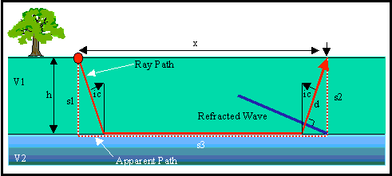
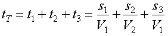
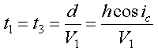
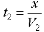
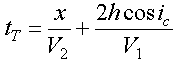
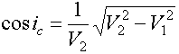
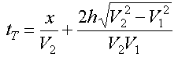

Derivation of Travel Time Equations: Flat Layer over Halfspace
For those who are interested, this page outlines the details of how the equations given on the last page were derived. Although you don't need to memorize this derivation, a working knowledge of its construction is useful, especially when we consider travel time curves produced by more complex Earth models.
To derive the equations for the velocity of the halfspace and the depth to the top of the halfspace shown previously, we first need to be able to construct an equation that defines the time of arrival of a head wave, tT, off of a single interface at some offset, x. To do this we will consider the raypath of the head wave from the source to the receiver as defined by Snell's law.
Consider the simple Earth model shown below. It consists of a layer with a velocity of V1 overlying a halfspace with a velocity of V2. The depth to the top of the halfspace is h.

The raypath of the head wave observed at an offset x is shown by the red line. This raypath consists of three segments: one traveling down through the layer, another traveling along the layer itself, and a third (which is identical to the first) traveling back up through the layer to the receiver. We could, as is done in most textbooks, derive our equation for the travel time of this wave by computing the time along each of these segments and summing them up. In this derivation, however, we will consider an alternate method of calculation that makes the analysis through more complex structures much easier.
From the wave propagation movie shown previously, notice that the shape of the head wave as it travels back up through the layer is that of a straight line. A graphical representation of this is shown by the blue line in the figure above. Knowing that the head wave forms a linear wavefront, we can consider an alternate ray path called the apparent raypath. The apparent raypath is shown as the red dashed line. Like the true raypath, it also consists of three segments. These segments, however, are different. One travels downward vertically through the layer from the source. The second travels along the boundary over a distance x. The third travels vertically upward through the layer to the receiver.
Let's compute the travel time of the head wave by summing up the times along the three segments of the apparent raypath. The time along each segment is nothing more than the length of the segment divided by the velocity the wave travels along that segment. That is,
Consider the two segments in the layer. They are identical to each other, so the times the wave spends traveling along each must be identical. The head wave shown by the blue line travels along the distance s1 over the same time period that it travels along the true raypath for a distance d. d is equal to s1 times the cosine of the angle ic, and s1 is simply equal to the thickness of the layer, h. Thus,
The travel time along the apparent raypath that lies along the layer boundary is nothing more than the distance x divided by the velocity the wave travels along the boundary, V2.

Thus, the total travel time of the head wave is

It is easily shown that (we'll leave this one up to you) to get the answer, you use Snell's law to compute the sine of the angle of incidence of the incoming wave, i1 (which we've called ic here) and then use trigometric relations to get an expression for the cosine of the angle.

Substituting this into our travel time expression we get the following:

This is nothing more than an equation of a straight line. The slope of the line is given by the first term on the right-hand side and is 1/V2. The intercept of the line is given by the second term on the right-hand side and is what we have called t0. Set the second term on the right-hand side equal to t0 and solve for the layer thickness, h. You will get the expression given on the previous page.
Seismology
- Simple Earth Model: Low-Velocity Layer Over a Halfspacepg 11
- Head Wavespg 12
- Records of Ground Motionpg 13
- Travel-time Curves for a Simple Earth Modelpg 14
- First Arrivalspg 15
- Determining Earth Structure from Travel Timespg 16
- Derivation of Travel Time Equationspg 17
- High-Velocity Layer Over a Halfspace: Reprisepg 18
- Picking Times of Arrivalspg 25
- Wave Propagation with Multiple Horizontal Layerspg 26
- Travel Time Curves from Multiple Horizontalpg 27
- Hidden Layerspg 28
- Head Waves from a Dipping Layer: Shooting Down Dippg 29
- Head Waves from a Dipping Layer: Shooting Up Dippg 30
- A Field Procedure for Recognizing Dipping Bedspg 31
- Estimating Dips and Depths from Travelpg 32